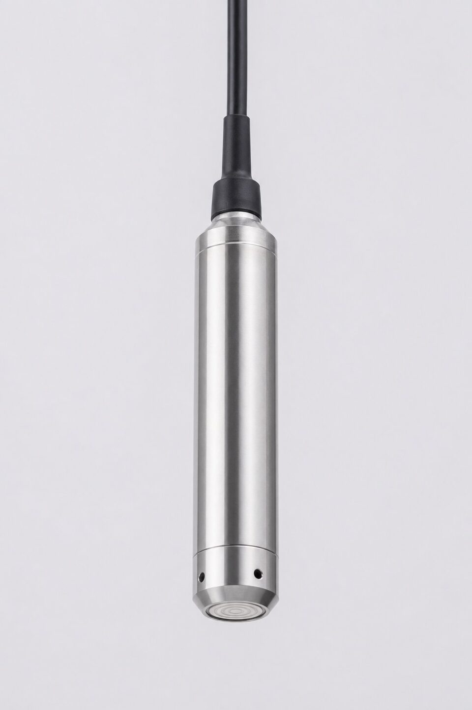

اصل اندازهگیری
در هر مایعی، فشار با عمق افزایش مییابد: هر متر ستون مایع، فشار مشخصی متناسب با چگالی ایجاد میکند. ترانسمیتر سطح هیدرواستاتیک از همین رابطه استفاده مینماید؛ سنسور فشار به نقطه موردنظر فرستاده میشود و فشار وارد بر دیافراگم آن، با کالیبراسیون انجامشده، به ارتفاع ستون مایع تبدیل میگردد. زیبایی این روش در سادگی آن است: بدون تماس نوری یا صوتی، بدون نیاز به دسترسی از بالای مخزن و با هزینه معقول. در چاهها و مخازن روباز، این روش به یکی از رایجترین انتخابها تبدیل شده است.

انواع و پیکربندیها
- غوطهور با کابل: رایجترین طرح؛ با کابل درون چاه یا مخزن آویزان میشود.
- نصب کف مخزن: برای حوضچهها و استخرها با اتصال ثابت.
- طرحهای فشار بالا: برای چاههای عمیق و کاربردهای خاص.
- نسخههای با خروجیهای مختلف و قابلیتهای تشخیصی.
چگالی و جبرانسازی
از آنجا که فشار اندازهگیریشده حاصلضرب ارتفاع در چگالی است، هر تغییر چگالی مستقیم بر خوانش سطح اثر میگذارد. در آب با دمای نسبتا ثابت، این خطا ناچیز است؛ اما در سیالهایی که دما یا ترکیب آنها تغییر میکند، باید چگالی واقعی در محاسبه لحاظ یا از روشهای جبران استفاده شود. در مخازن تحت فشار نیز فشار فضای بالای مایع به خوانش اضافه میشود و باید با پورت مرجع یا ترانسمیتر اختلاف فشار جبران گردد؛ به همین دلیل برای مخازن بسته معمولا روش اختلاف فشاری دو نقطهای ترجیح داده میشود.
معیارهای انتخاب و نصب
برای انتخاب، چهار پارامتر اصلی را مشخص کنید: رنج سطح (عمق) موردنیاز، سیال و دمای آن، متریال موردنیاز بخش خیس و طول و نوع کابل. در چاههای عمیق، وزن کابل و نحوه مهار آن اهمیت دارد؛ کابل باید هم مسیر سیگنال باشد و هم بار مکانیکی را تحمل کند. در فاضلاب و سیالهای خورنده، دیافراگم و بدنه از متریال مقاوم و روکش کابل متناسب انتخاب شود. محل قرارگیری سنسور نیز باید دور از ورودیهای متلاطم و نقاط رسوبگذاری باشد تا خوانش نماینده سطح واقعی باشد.
عیبیابی و خطاهای رایج اندازهگیری هیدرواستاتیک
ترانسمیترهای فشار هیدرواستاتیک ذاتا ساده و قابل اتکا هستند، اما چند منبع خطای مشخص دارند که شناخت آنها عیبیابی را سریع میکند. اولین و رایجترین خطا، تغییر چگالی سیال است؛ از آنجا که فشار ستون مایع به چگالی وابسته است، هر تغییری در دما، ترکیب یا غلظت سیال، قرائت را جابجا میکند. اگر مخزن شما محصولاتی با چگالی متفاوت را در دورههای مختلف نگهداری میکند، باید یا جبران چگالی در نظر گرفته شود یا انتظار خطای متناسب با تغییر چگالی را پذیرفت. دوم، فشار بالای سطح مایع است؛ در مخازن سربسته، فشار فاز گازی به فشار ستون مایع اضافه میشود و اگر ترانسمیتر فقط فشار مطلق را ببیند، تغییرات فشار گاز به اشتباه به عنوان تغییر سطح تفسیر میشوند. راهحل، استفاده از پیکربندی اختلاف فشار یا جبران فشار گاز است. سوم، وضعیت مرجع صفر است؛ موقعیت نصب ترانسمیتر نسبت به نقطه صفر سطح باید مشخص و در کالیبراسیون لحاظ شده باشد؛ جابجایی فیزیکی ترانسمیتر پس از کالیبراسیون، مرجع صفر را تغییر میدهد. چهارم، مساله خطوط ایمپالس در پیکربندیهای اختلاف فشار است؛ میعان یا تجمع گاز در این خطوط، خطای ثابت ایجاد میکند و شیببندی درست و تخلیه دورهای اهمیت دارد. پنجم، کف و اغتشاش سطح است؛ اگر سطح مایع به شدت در نوسان باشد، قرائت لحظهای نماینده سطح واقعی نیست و باید از میرایی مناسب استفاده شود. ششم، آسیب دیافراگم است؛ ضربه مکانیکی در زمان نصب یا یخزدگی سیال در دیافراگمهای در معرض، میتواند سنسور را از کالیبره خارج کند. در عیبیابی عملی، اگر قرائت با تغییر واقعی سطح همخوانی ندارد، ابتدا چگالی و فشار بالای سطح، سپس مرجع صفر و خطوط ایمپالس و در نهایت سلامت سنسور را بررسی کنید.
جمعبندی
ترانسمیتر سطح هیدرواستاتیک سادهترین و اقتصادیترین راه برای پایش سطح در چاهها و مخازن روباز است. با شناخت وابستگی آن به چگالی، انتخاب متریال متناسب سیال و نصب درست کابل و سنسور، این روش سالها اندازهگیری پایدار ارائه میدهد و یکی از قابل اتکاترین گزینهها برای نقاط بدون دسترسی از بالا محسوب میشود.
سوالات رایج
ترانسمیتر سطح هیدرواستاتیک چگونه کار میکند؟
فشار هیدرواستاتیک با ارتفاع ستون مایع و چگالی آن رابطه مستقیم دارد؛ سنسور فشار در کف یا عمق مشخص قرار میگیرد و فشار را به سطح تبدیل میکند. برای دقت، چگالی سیال باید مشخص و پایدار باشد.
کجا کاربرد اصلی آن است؟
چاههای آب و پیزومترها، مخازن روباز و فرایندی، استخرها و حوضچهها، و هر نقطهای که امکان نصب سنسور غوطهور وجود داشته باشد و سیال با متریال سنسور سازگار باشد.
محدودیت اصلی چیست؟
وابستگی به چگالی؛ اگر چگالی سیال تغییر کند، خوانش سطح خطا میگیرد. در مخازن تحت فشار نیز باید فشار فضای بالای مایع جبران شود، وگرنه به عنوان سطح اضافه خوانده میشود.
جنس سنسور و کابل چقدر مهم است؟
بسیار؛ سنسور در تماس مستقیم و طولانی با سیال است. برای آب گزینههای استاندارد کافی است اما در فاضلاب و سیالهای خورنده، متریال بدنه، دیافراگم و روکش کابل باید متناسب انتخاب شود.
مطالب مرتبط
با ذکر عمق، سیال و طول کابل، ترانسمیتر سطح غوطهور متناسب از برندهای معتبر عرضه میشود.
مشاهده صفحه محصول ← ثبت RFQ همین محصولتامین این تجهیزات را به پیشرو تجهیز فرتاک بسپارید
شرکت پیشرو تجهیز فرتاک تامینکننده تخصصی تجهیزات صنعتی برای پروژههای نفت، گاز، پتروشیمی، فولاد و نیروگاهی است. برای دریافت پیشنهاد فنی و قیمت، استعلام (RFQ) خود را ثبت کنید تا کارشناسان مهندسی فروش در کوتاهترین زمان پاسخ دهند.
- تامین ابزار دقیقترانسمیترها و آنالایزرهای برندهای معتبر
- تامین تجهیزات صنایع نفت و گازپکیج مواد مطابق وندورلیست